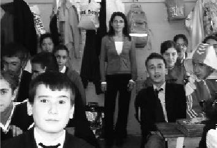

Hayata yeniden böyle bir noktadan başlamak istiyorsanız eğer, birilerine el uzatmak istiyorsanız, gelişmek ve geliştirmek istiyorsanız, TUP, sizin de aradığınız proje demektir. İnandıktan sonra insanın başaramayacağı hiçbir şey yoktur. (Funda Çelik)
Funda, efendi, sakin, iyi ahlaklıdır. Ben onu ancak uzaktan izleyebildim. Gençlere el uzattığı için onunla gurur duydum hep. Çok istikrarlı bir genç olduğunu düşünüyorum.